Nama lengkap : Habib Muzakki
Kelas : 12 Agama
Sekolah : MAN 2 KOTA SERANG
Absen : 15
Mapel : Prakarya
Guru : Pak Win
Pendahuluan
Latar Belakang
Indonesia merupakan negara kepulauan yang kaya akan keragaman budaya, suku bangsa, dan sumber daya alam. Kekayaan ini tercermin dalam ragam kuliner khas daerah yang memiliki karakteristik unik di setiap provinsinya. Makanan khas daerah bukan sekadar kebutuhan pokok, melainkan identitas budaya yang menggunakan bahan baku lokal dan teknik pengolahan yang diwariskan secara turun-temurun.
Sebagai siswa kelas 12, pemahaman mengenai prakarya dan kewirausahaan makanan khas daerah sangat penting untuk menumbuhkan rasa cinta terhadap produk lokal serta melihat peluang potensi ekonomi kreatif di bidang kuliner.
Tujuan Penulisan :
Tujuan dari penyusunan laporan tugas ini adalah:
Mengidentifikasi berbagai jenis makanan khas daerah dari seluruh provinsi di Indonesia
Menganalisis bahan baku utama, bahan tambahan, serta teknik pengolahan yang digunakan dalam pembuatan makanan tersebut.
- Memahami karakteristik cita rasa yang menjadi ciri khas dari masing-masing daerah.
Memenuhi tugas mata pelajaran Prakarya yang diampu oleh Pak Win.
| No | Nama makanan | Asal daerah | Bahan utama dan tambahan | Teknik pengolahan | Cita rasa |
|---|---|---|---|---|---|
1. |
Mie Aceh
|
Aceh Darussalam |
|
Direbus/digoreng dengan bumbu kari kental |
|
2. |
Rendang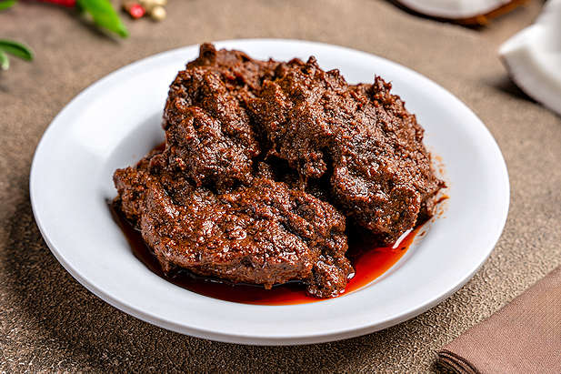 |
Sumatera Barat |
|
Dimasak lama (slow cooking) hingga kering |
|
3. |
Pempek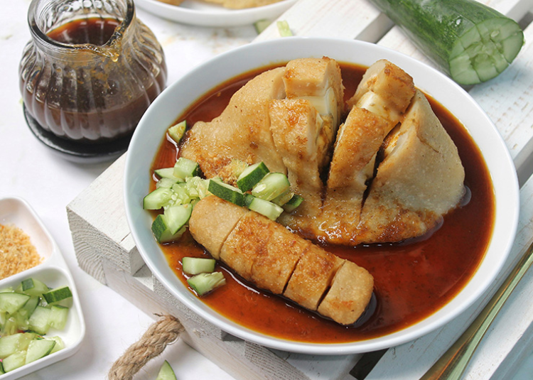 |
Sumatra Selatan |
|
Direbus lalu digoreng. |
|
4. |
Kerak Telor
|
DKI Jakarta |
|
Dipanggang di atas wajan tanpa minyak hingga kerak. | Gurih dan legit |
5. |
Gudeg
|
Yogyakarta |
|
Direbus perlahan selama berjam-jam (ungkep) | Manis dan gurih. |
7. |
Rawon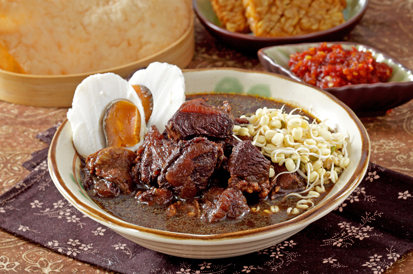 |
Jawa Timur |
|
Direbus (sup) dengan bumbu kluwek. |
|
7. |
Ayam Betutu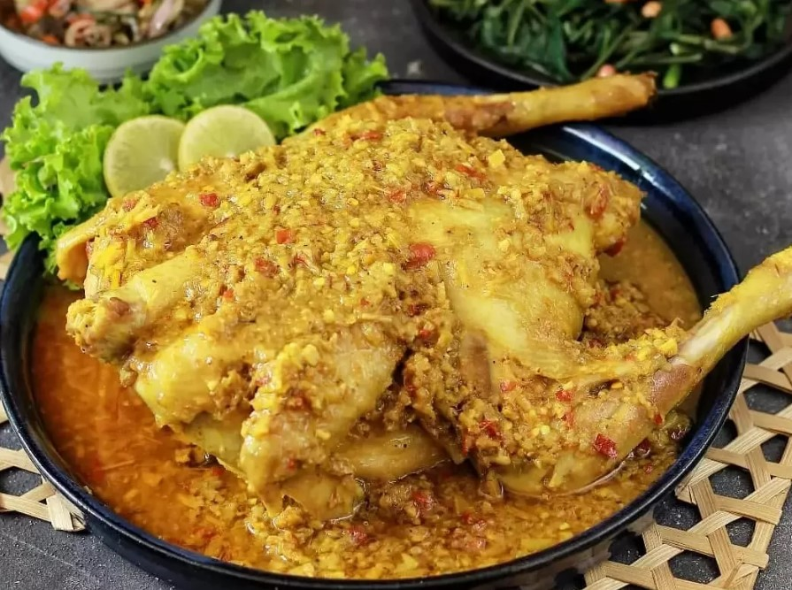 |
Bali |
|
Dikukus lalu dibakar (tradisionalnya ditanam di tanah). | Sangat pedas dan kaya bumbu. |
8. |
Ayam Taliwang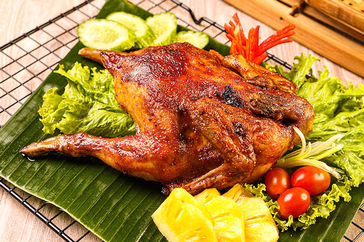 |
Nusa Tenggara Barat |
|
Dibakar/digoreng setelah dimarinasi. | Pedas menyengat dan gurih. |
9. |
Daging Sei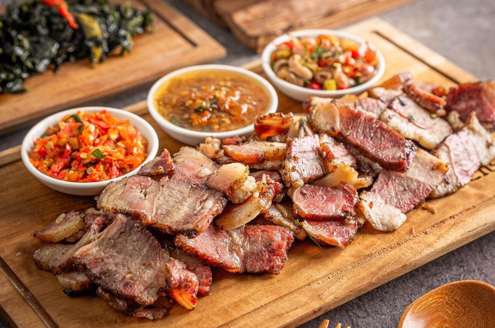 |
Nusa Tenggara Timur |
|
Diiris tipis lalu diasap dengan kayu khusus. |
|
10. |
Bubur Pedas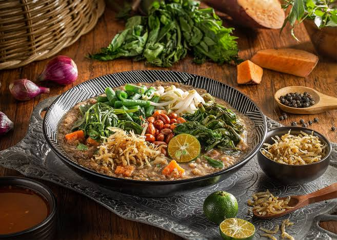 |
Kalimantan Barat |
|
Dimasak menjadi bubur dengan aneka sayuran. |
|
11. |
Juhu Singkah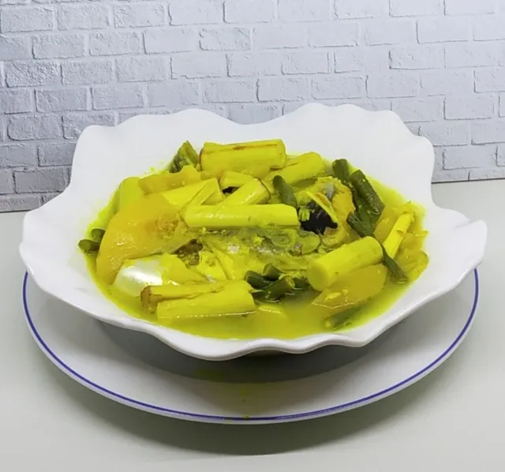 |
Kalimantan Tengah |
|
Direbus dengan bumbu santan/bening. |
|
12. |
Coto Makassar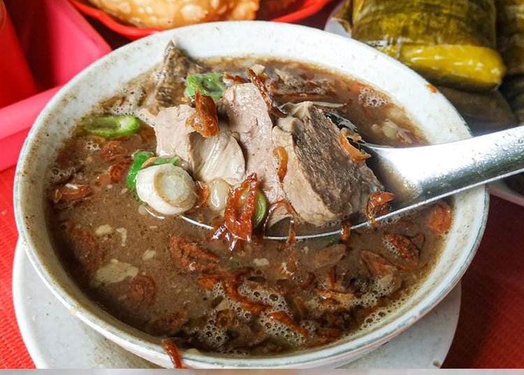 |
Sulawesi Selatan |
|
Direbus lama dengan rempah dalam kuali tanah |
|
13. |
Tinutuan
|
Sulawesi Utara |
|
Direbus menjadi bubur sayur. | Segar dan kaya serat. |
14. |
Papeda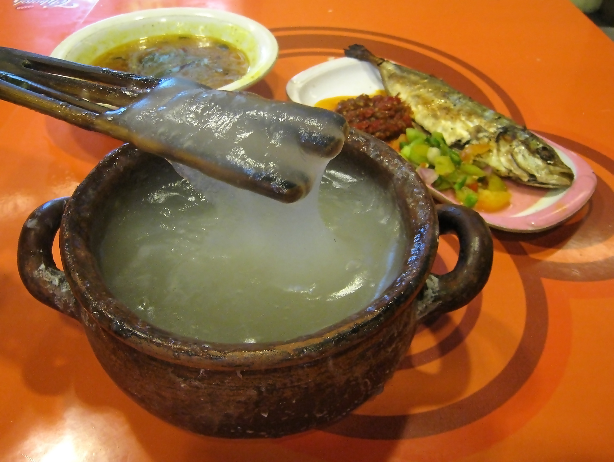 |
Maluku dan Papua |
|
Tepung sagu disiram air mendidih hingga mengental. | Tawar, kenyal (seimbang dengan ikan). |
15. |
Ikan Bakar Manokwari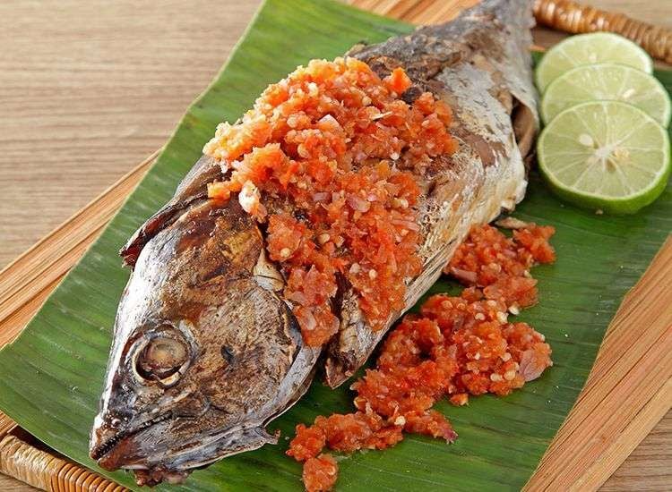 |
Papua Barat |
|
Dibakar dengan bumbu mentah yang disiramkan. | Sangat pedas dan segar. |
Kesimpulan
Berdasarkan hasil identifikasi dan analisis terhadap berbagai makanan khas daerah di Indonesia, dapat disimpulkan bahwa:
Keanekaragaman Bahan Baku: Setiap daerah memanfaatkan sumber daya alam lokal sebagai bahan utama, seperti ikan tenggiri pada Pempek , nangka muda pada Gudeg , hingga tepung sagu pada Papeda
Variasi Teknik Pengolahan: Masyarakat Indonesia memiliki teknik memasak yang sangat beragam, mulai dari teknik merebus lama (slow cooking) pada Rendang dan Coto Makassar , pembakaran pada Ayam Taliwang , hingga pengasapan pada Daging Sei
Karakteristik Cita Rasa: Cita rasa kuliner Nusantara sangat dipengaruhi oleh penggunaan rempah-rempah yang kuat. Terdapat perbedaan kecenderungan rasa antar wilayah, seperti rasa manis-gurih yang dominan di Jawa (Gudeg) , serta rasa pedas yang kuat di wilayah Sumatra, Bali, dan Nusa Tenggara
Identitas Budaya: Makanan khas daerah bukan hanya sekadar produk konsumsi, tetapi juga merupakan warisan budaya yang mencerminkan kreativitas dan kearifan lokal masyarakat Indonesia dalam mengolah bahan pangan.
Dengan memahami kekayaan kuliner ini, kita diharapkan dapat terus melestarikan dan mempromosikan makanan khas daerah sebagai bagian dari identitas bangsa Indonesia.